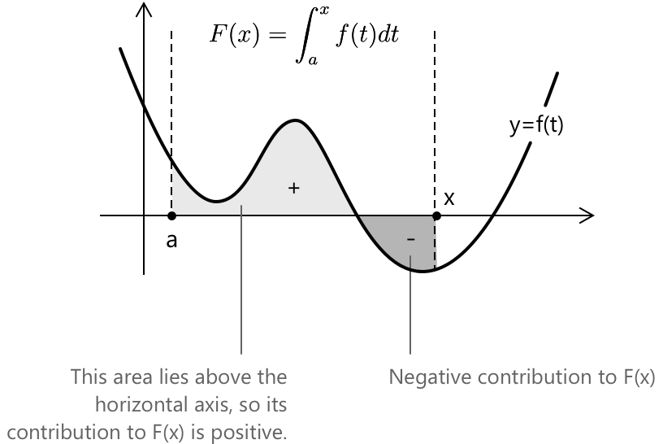

Основна теорема математичного аналізу
Вступ
Основна теорема інтегрального числення встановлює точний зв'язок між диференціюванням та інтегруванням. Ці дві операції виникають з різних початкових мотивів. Диференціювання описує миттєву зміну, тоді як інтегрування вимірює накопичену величину. Теорема доводить, що за відповідних припущень про регулярність вони є оберненими процесами. Результат традиційно поділяють на два взаємодоповнювальні твердження:
- Перша основна теорема інтегрального числення
- Друга основна теорема інтегрального числення
Як буде показано в наступних розділах, Перша основна теорема гарантує, що будь-яка неперервна функція на замкненому проміжку має первісну, що будується явно за допомогою інтегрування. Друга виражає практичний наслідок: визначений інтеграл функції на проміжку можна обчислити безпосередньо з будь-якої її первісної, обчисленої в кінцевих точках.
Перша основна теорема інтегрального числення
Нехай \( f \) є неперервною на замкненому проміжку \( [a,b] \). Визначимо функцію:
\[ F(x) = \int_a^x f(t)\,dt \]
для \( x \in [a,b] \). Тоді \( F \) є неперервною на \( [a,b] \), диференційовною на \( (a,b) \), і:
\[ F’(x) = f(x) \]
Це твердження стверджує, що функція, визначена накопиченням площі від фіксованої нижньої межі до змінної верхньої межі, є диференційовною, і її похідна збігається з початковим підінтегральним виразом. Щоб обґрунтувати цей результат, розглянемо різницевий частку:
\[ \frac{F(x+h) - F(x)}{h} = \frac{1}{h} \left( \int_a^{x+h} f(t)\,dt - \int_a^x f(t)\,dt \right) \]
Визначені інтеграли задовольняють властивість адитивності на суміжних проміжках: \[ \int_a^b f(t)\,dt + \int_b^c f(t)\,dt = \int_a^c f(t)\,dt \] Застосувавши це до нашого випадку, отримаємо: \[ \frac{1}{h} \int_x^{x+h} f(t)\,dt \]
Оскільки \( f \) є неперервною на \( [x, x+h] \), теорема про середнє значення для інтегралів гарантує існування точки \( c \) між \( x \) та \( x+h \), такої що:
\[ \int_x^{x+h} f(t)\,dt = f(c)h \]
Звідси:
\[ \frac{F(x+h) – F(x)}{h} = f(c) \]
При \( h \to 0 \), точка \( c \to x \). З неперервності \( f \) випливає, що
\[ \lim_{h \to 0} \frac{F(x+h) - F(x)}{h} = f(x) \]
що доводить \( F’(x) = f(x) \). Концептуально ця теорема показує, що накопичення створює функцію, чия миттєва швидкість зміни відновлює початкову щільність.
З геометричної точки зору, Перша основна теорема інтерпретує функцію:
\[ F(x) = \int_a^x f(t)\,dt \]
як накопичену алгебраїчну площу. Похідна \( F’(x) \) представляє миттєву швидкість, з якою ця площа зростає. Якщо \( f(x) > 0 \), площа збільшується; якщо \( f(x) < 0 \), вона зменшується.

Друга основна теорема інтегрального числення
Нехай \( f \) є неперервною на \( [a,b] \), і припустимо, що \( F \) є будь-якою первісною для \( f \), тобто:
\[ F’(x) = f(x) \]
Тоді:
\[ \int_a^b f(x)\,dx = F(b) - F(a) \]
Це друге твердження перетворює обчислення визначеного інтеграла на обчислення різниці значень первісної. Щоб побачити структурний зв'язок із першою частиною, визначимо:
\[ G(x) = \int_a^x f(t)\,dt \]
З Першої основної теореми, \( G’(x) = f(x) \). Оскільки і \( F \), і \( G \) мають однакову похідну, їхня різниця є сталою:
\[ F(x) = G(x) + c \]
Обчислення при \( x = a \) дає:
\[ F(a) = G(a) + c \]
Оскільки \( G(a) = 0 \), отримаємо \( c = F(a) \), і отже:
\[ G(x) = F(x) - F(a) \]
При \( x = b \) отримуємо:
\[ \int_a^b f(x)\,dx = G(b) = F(b) - F(a) \]
Таким чином, визначений інтеграл вимірює чисту зміну будь-якої первісної на проміжку.
Друга основна теорема має геометричний бік, на якому варто зупинитися. Дано неперервну функцію \( f \) на \( [a, b] \) та будь-яку первісну \( F \), визначений інтеграл вимірює чисту алгебраїчну площу між графіком \( f \) та горизонтальною віссю. Теорема говорить нам, що ця площа дорівнює \( F(b) - F(a) \), що є не чим іншим, як чистою зміною \( F \) на проміжку.
Вражаючим є те, що не потрібно реконструювати площу частинами. Первісна \( F \) вже містить цю інформацію в собі, накопичену безперервно. Достатньо обчислити її у двох кінцевих точках і знайти різницю. Уся геометрія кривої між \( a \) та \( b \) зводиться до однієї арифметичної операції.
Приклад 1
Розглянемо наступний інтеграл: \[ \int_0^1 3x^2\,dx \] Первісна для \( 3x^2 \) має вигляд \( F(x) = x^3 \). За Другою фундаментальною теоремою маємо: \[ \int_0^1 3x^2\,dx = F(1) - F(0) = 1^3 - 0^3 = 1 \] Площа під кривою \( 3x^2 \) на проміжку \([0, 1]\) отже дорівнює рівно \( 1 \), що отримано без будь-яких геометричних аргументів, а виключно шляхом обчислення первісної в кінцевих точках.
Як другу ілюстрацію, визначимо: \[ H(x) = \int_1^x \ln t\,dt \] Зауважимо, що \( H(1) = 0 \), оскільки інтеграл по виродженому проміжку дорівнює нулю. Оскільки \( \ln t \) є неперервною для \( t > 0 \), функція \( H \) визначена для \( x > 0 \), і Перша фундаментальна теорема передбачає: \[ H’(x) = \ln x \] Похідна функції накопичення точно відновлює підінтегральну функцію, підтверджуючи, що інтегрування та диференціювання є оберненими операціями в точному сенсі, встановленому теоремою.
Приклад 2
Застосуйте Першу фундаментальну теорему числення для того, щоб знайти наступну похідну:
\[ \frac{d}{dx} \int_1^x e^{-t^2}\,dt \]
- Підінтегральною функцією тут є \( f(t) = e^{-t^2} \), яка є неперервною функцією на всій множині \( \mathbb{R} \).
- Нижня межа інтегрування — це стала \( 1 \), а верхня межа — змінна \( x \).
Це саме умови Першої фундаментальної теореми: якщо \( F(x) = \int_a^x f(t)\,dt \), то \( F’(x) = f(x) \).
Застосовуючи це безпосередньо, отримаємо:
\[ \frac{d}{dx} \int_1^x e^{-t^2}\,dt = e^{-x^2} \]
Похідна функції накопичення відновлює підінтегральну функцію, обчислену в точці \( x \). Зауважте, що \( e^{-t^2} \) не має первісної у вигляді замкненої формули через елементарні функції, проте Перша фундаментальна теорема дозволяє нам диференціювати інтеграл, не обчислюючи його явно.
Вибрана література
-
University of California, Berkeley. Фундаментальна теорема числення
-
Michigan State University. Фундаментальна теорема числення
-
Dartmouth College. Фундаментальна теорема числення
-
Stony Brook University. Фундаментальна теорема числення